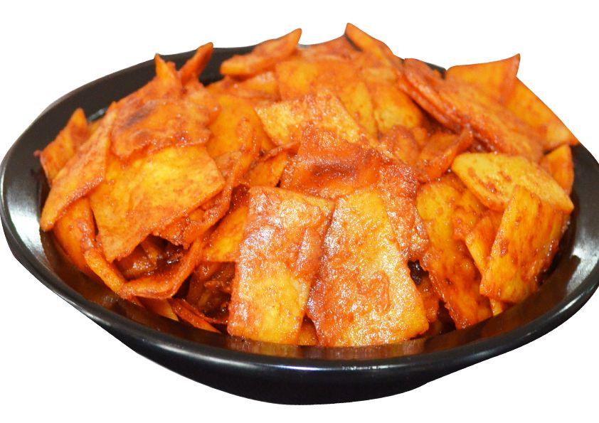

Chechebsa

This is a popular traditional Ethiopian breakfast meal
Ingredients
- 1 teaspoon of oil to prevent sticky pan
- 1 cup of flour (whole wheat, all purpose, teff, or a mixture of some or all the flours)
- 1/2 teaspoon salt
- 2 teaspoon spiced red pepper powder
- 4 teaspoon spiced butter (mitir kibbeh)